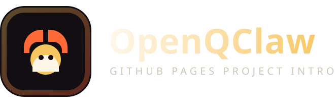
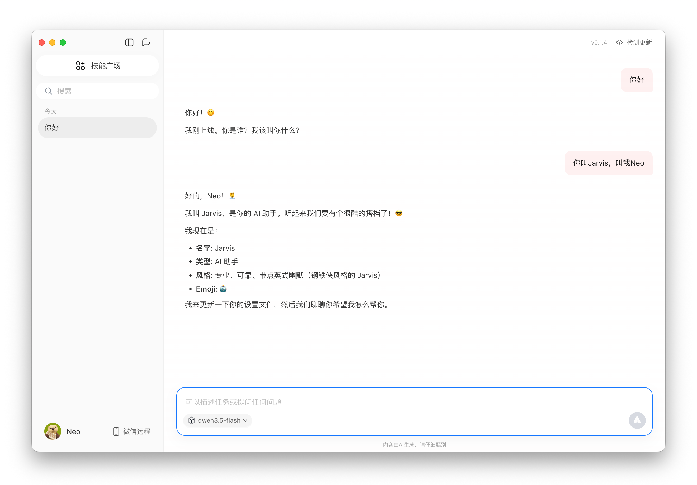
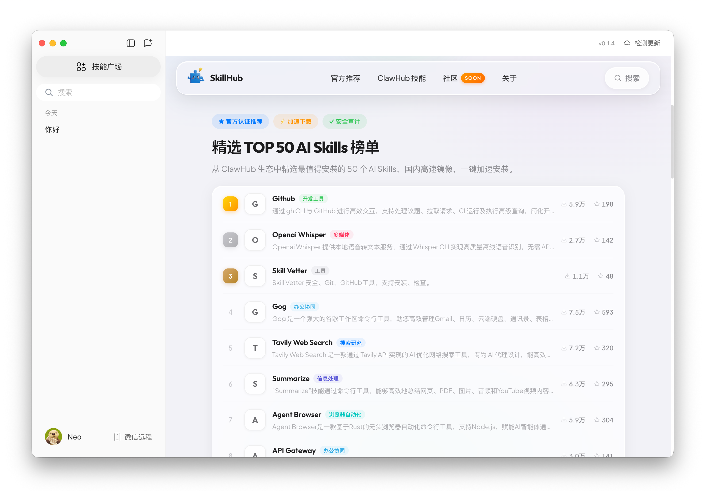
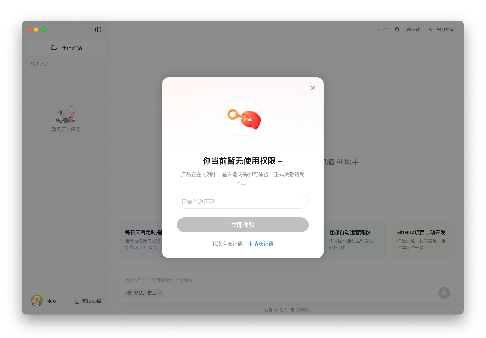
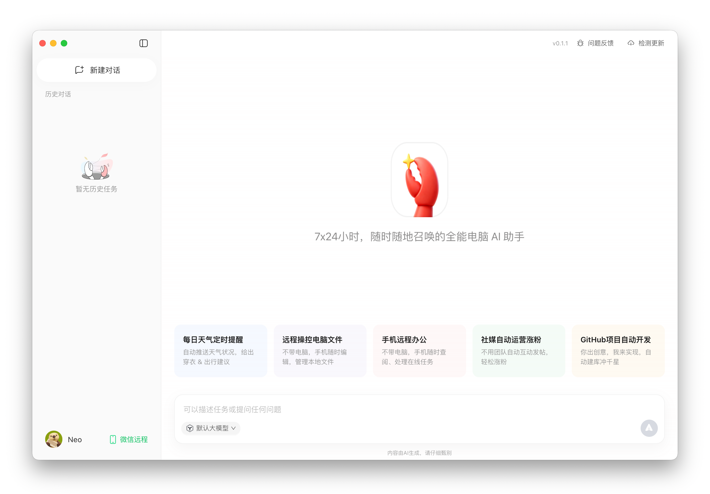
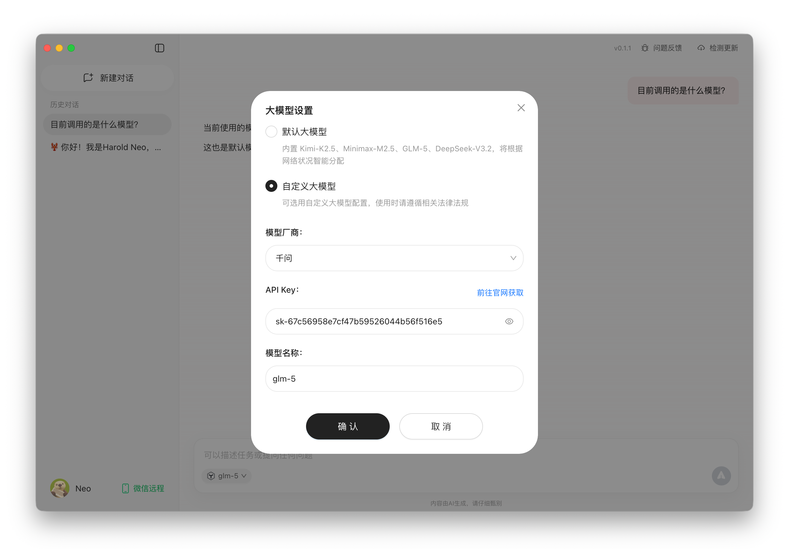
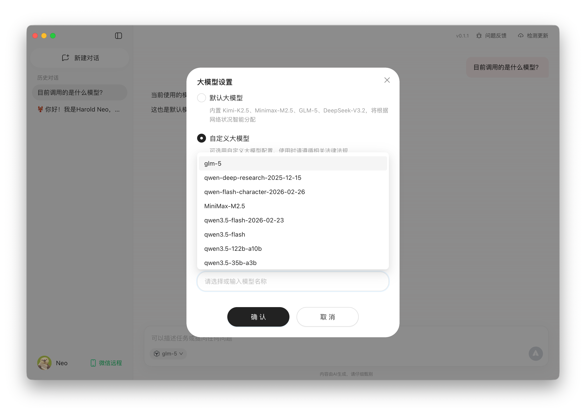
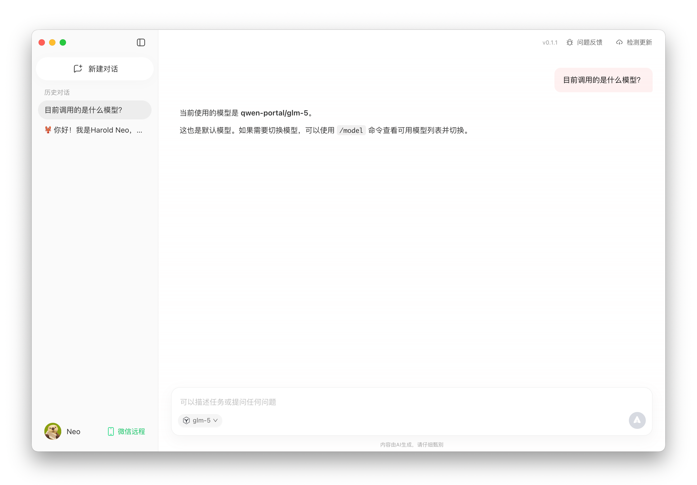
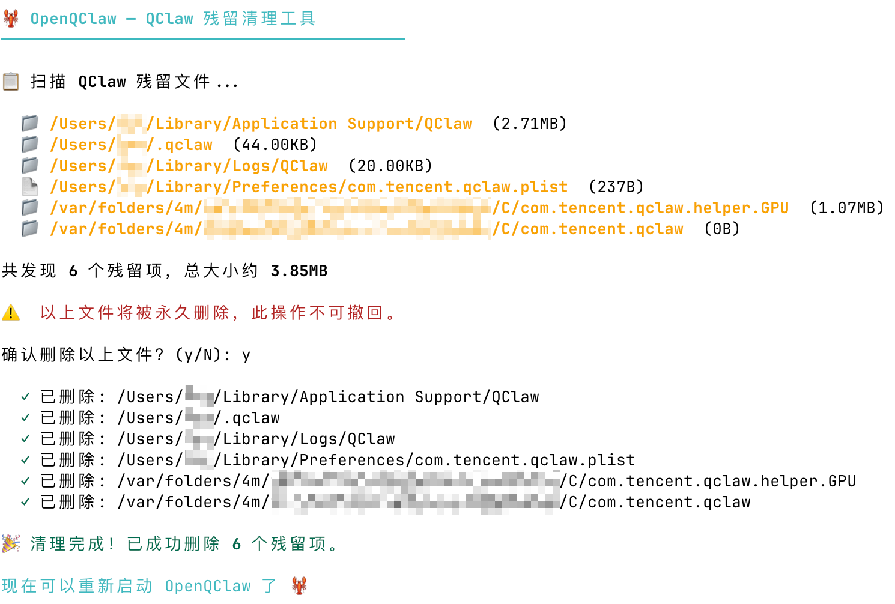

基于 QClaw 构建

OpenQClaw 的 GitHub Pages 项目介绍页，保留原站的节奏感与下载导向， 但内容与实现全部改为面向当前仓库的原创版本。
主界面
OpenQClaw 0.1.4

技能广场
Skill Hub

Highlights
围绕当前仓库状态重新组织的项目亮点
不直接照搬第三方文案，改为突出 OpenQClaw 目前已经验证过、并且和仓库内容一致的能力与说明。
去除邀请码门槛
打开应用即可进入主界面，不再卡在前端邀请码校验流程。
自定义模型可继续使用
README 与 FAQ 中已有实际可行方案，可接入 GLM、MiniMax、Qwen 等模型继续使用。
已同步 0.1.4 新界面
技能广场与侧边栏更新已纳入介绍页视觉主图，方便直接对齐当前版本能力。
故障恢复路径完整
常见的强更覆盖、缓存残留和 403 场景都有现成 FAQ 与清理脚本兜底。
面向 GitHub Pages 部署
纯静态目录结构，无需构建步骤，放到仓库中即可作为项目介绍页继续微调。
How It Works
三步开始使用 OpenQClaw
下载、放入应用目录、按提示完成首次打开与排查，即可快速进入当前可用功能。
下载对应架构版本
Apple Silicon 与 Intel 链接会自动读取 GitHub 最新 Release 资源。
拖入 `/Applications`
首次打开如果出现安全提示，前往系统设置里的隐私与安全性选择“仍要打开”。
优先参考 FAQ 排障
遇到缓存残留、更新覆盖或 API 403 时，直接按照仓库 FAQ 与清理脚本处理。
Showcase
直接来自仓库素材的使用展示
选用现有截图与二维码资源，避免再引入第三方站点图片，同时保证介绍页和仓库内容一致。
Before / After
入口状态对比
把“原版拦截”和“OpenQClaw 可直接进入”的差异直接可视化，方便新访客快速理解项目用途。


Model Setup
自定义模型设置与聊天效果
把 FAQ 中“可继续使用”的信息具体化，用设置页、模型列表和聊天效果三张图串起来。



Recovery
清理脚本作为恢复入口
如果本地残留配置导致异常，项目已经提供现成脚本，适合放在介绍页里作为常见问题兜底入口。

Current Status
当前版本介绍页明确保留了一条状态说明
根据仓库 FAQ，微信远程控制相关服务端校验已经收紧，因此本页没有继续放大这一能力， 而是把重点放在桌面端可用功能、自定义模型与版本下载上。
Resources
把仓库入口集中到一屏里
页脚和资源区统一改成 OpenQClaw 项目链接，不保留 Tencent 相关字样。
OpenQClaw 项目介绍页
准备先在本地看效果，再继续细调细节
现在这个 `web/` 目录已经可以作为 GitHub Pages 静态页基础版本继续改， 后面你想换字图、替换 CTA、补充更多场景，我都可以直接在这套结构上继续迭代。